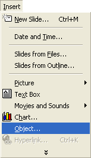
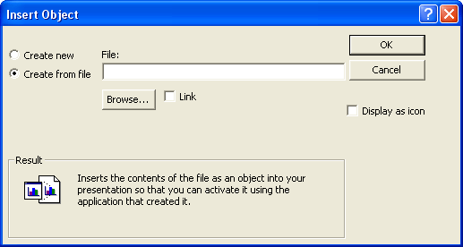
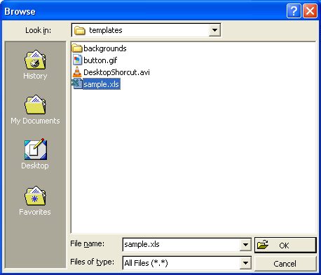
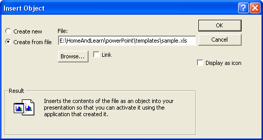
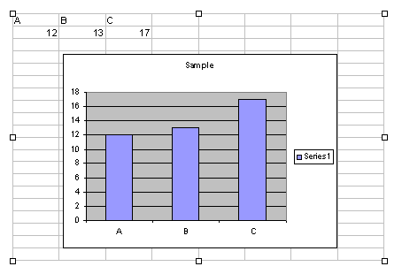

Free
powerpoint
Tutorials
|
Free
powerpoint
Tutorials
|
|
 home home |
Stay at Home and Learn | ||||
Excel Charts and PowerPoint |
|||||
|
Part 1, 2
You can insert Excel worksheets into your PowerPoint slides. There are three options, here:
We'll take you through all three.
Insert an Excel Worksheet that you've already createdTo insert an Excel worksheet that you have on your computer, and not created through PowerPoint, do the following:
 When you click on Object, you get the following dialogue box popping up:  To get the same screen as above, select the option on the left for Create from file. Then click the Browse button. Browse to the location on your computer where you saved your Excel file:  Click OK and your Insert Object dialogue box will look something like ours:  Click OK, and PowerPoint will place your Excel worksheet onto your slide:  You can use this same technique for most files on your computer (Word documents, for example). Just Insert them as an Object.
In the next part, you'll see how to insert a blank Excel worksheet onto a slide, and then enter some data. |
||||